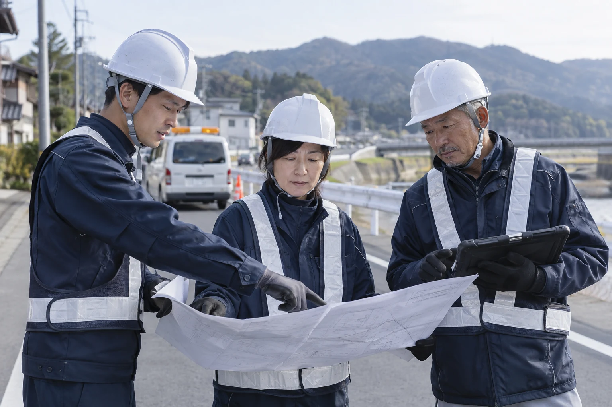

About
蒼建について
暮らしのすぐそばで、
地域を支える会社です。
道路・橋梁・排水設備。その先にあるのは、地域で暮らす人たちの毎日です。私たちは一つひとつの現場と向き合い、街の当たり前を守る仕事に取り組みます。

Our Values
現場で大切にする、3つのこと。
01 / SAFETY
安全を、仕事の出発点に。
作業前の確認や仲間への声かけを大切に。働く人と、その街で暮らす人の安全を考えます。
02 / QUALITY
見えないところまで、丁寧に。
小さな傷みや変化にも目を向け、確認を重ねる。仕上がりだけでなく、仕事の過程にも向き合います。
03 / TEAMWORK
一人の経験を、チームの力に。
気づいたことを共有し、困ったときは相談する。経験や立場を超えた連携を大切にします。
Company Profile
会社概要
- 会社名
- 蒼建株式会社（架空の企業）
- 創業
- 2006年（創業20年・2026年時点の架空設定）
- 事業内容
- 道路舗装工事／橋梁の点検・整備／排水設備の整備
- 累計施工実績
- 120件（2026年9月時点の架空設定）
- 有資格者
- 8名（2026年9月時点の架空設定）
- 事業の考え方
- 地域の暮らしを支える、道路・橋梁・排水設備の維持と整備
- 所在地・代表者
- 架空サイトのため未設定
- 許可番号・連絡先
- 架空サイトのため未設定